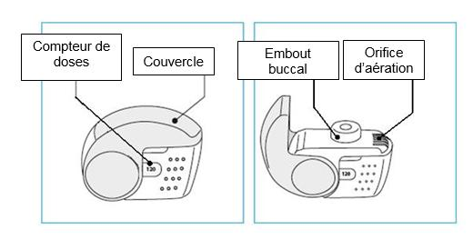
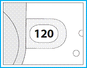
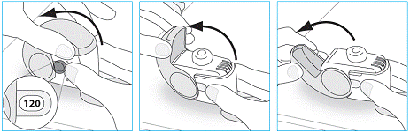
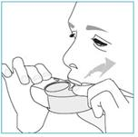
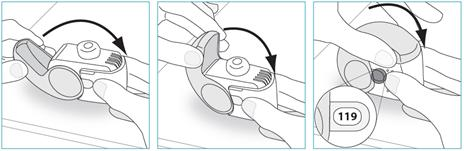

RÉSUMÉ DES CARACTÉRISTIQUES DU PRODUIT
ANSM - Mis à jour le : 06/05/2013
INNOVAIR NEXTHALER 100 microgrammes/6 microgrammes par dose, poudre pour inhalation
2. COMPOSITION QUALITATIVE ET QUANTITATIVE
Fumarate de formotérol dihydraté ................................................................ 6 microgrammes
Pour une dose mesurée de 10 mg de poudre pour inhalation.
La dose délivrée au travers de l’embout buccal est de 81,9 microgrammes de dipropionate de béclométasone anhydre et 5 microgrammes de fumarate de formotérol dihydraté.
Excipients à effet notoire : chaque dose contient 9,9 mg de lactose.
Pour la liste complète des excipients, voir rubrique 6.1.
L’inhalateur multidoses contient une poudre blanche à blanc cassé.
4.1. Indications thérapeutiques
· chez les patients insuffisamment contrôlés par une corticothérapie inhalée et la prise d'un bronchodilatateur bêta-2 agoniste de courte durée d'action par voie inhalée «à la demande».
ou
· chez les patients contrôlés par l'administration d'une corticothérapie inhalée associée à un traitement continu par bêta-2 agoniste de longue durée d'action par voie inhalée.
Note : INNOVAIR NEXTHALER ne correspond pas au traitement adapté de la crise d’asthme aiguë.
4.2. Posologie et mode d'administration
La posologie d’INNOVAIR NEXTHALER est individuelle et doit être ajustée en fonction de la sévérité de la maladie que ce soit à l'initiation ou pendant les phases d'adaptation du traitement. Si le dosage disponible de l'association fixe ne permet pas d'ajuster la posologie de chacun des principes actifs en fonction de l'état clinique du patient, bêta-2 agonistes et corticostéroïdes devront être administrés individuellement.
Compte tenu de sa distribution en particules extrafines, un ajustement de la posologie peut être nécessaire lorsque INNOVAIR NEXTHALER est initié en remplacement d’une spécialité délivrant des particules non extrafines. Un ajustement de la posologie n’apparait pas nécessaire lors du remplacement d’INNOVAIR NEXTHALER solution pour inhalation en flacon pressurisé, par INNOVAIR NEXTHALER, poudre pour inhalation.
Posologies recommandées chez l'adulte âgé de 18 ans et plus :
Une à deux inhalations deux fois par jour.
La dose journalière maximale est de 4 inhalations par jour.
Posologies recommandées chez l'enfant et l'adolescent de moins de 18 ans :
La sécurité et l’efficacité d’INNOVAIR NEXTHALER chez l’enfant et l’adolescent de moins de 18 ans n’ont pas encore été établies. Il n'existe pas de données avec INNOVAIR NEXTHALER chez l'enfant de moins de 12 ans. Les données actuellement disponibles chez les adolescents âgés de 12 à 17 ans sont résumées dans les rubriques 4.8 et 5.1, mais elles sont insuffisantes pour établir les recommendations relatives à la posologie adaptée.
Le médecin vérifiera régulièrement que le dosage prescrit est adapté pour un traitement optimal du patient. Il convient de toujours rechercher la posologie minimale permettant d'obtenir le contrôle des symptômes. Lorsque celui-ci est obtenu avec la posologie minimale recommandée d’INNOVAIR NEXTHALER, l'administration d'un corticoïde seul pourra être envisagée comme étape suivante dans la recherche du traitement minimal efficace.
Les patients devront être informés de la nécessité de poursuivre le traitement de façon régulière et quotidienne, même si la symptomatologie a régressé.
Populations spécifiques :
Il n'y a pas lieu d'ajuster la posologie chez les sujets âgés.
Il n'existe pas de donnée concernant l'emploi d’INNOVAIR NEXTHALER en cas d'insuffisance hépatique ou rénale (voir rubrique 5.2).
Mode d'emploi
Le dispositif NEXTHALER est un inhalateur déclenché par l’inspiration. Les patients présentant un asthme modéré à sévère gardent un débit inspiratoire suffisant pour déclencher la libération de la dose de poudre au travers du dispositif NEXThaler (voir la rubrique 5.1). Dans l’intervalle des valeurs limites des débits inspiratoires de ces patients, la dose de poudre délivrée au travers de l’inhalateur NEXTHALER reste constante.
L’utilisation correcte de l’inhalateur NEXTHALER est essentielle pour l’efficacité du traitement. Il convient d'informer le patient de la nécessité de lire attentivement la notice et de se conformer aux recommandations et modalités d'emploi qui y figurent. Ces instructions figurent également dans la rubrique 6.6. ci-après.
Dans la mesure du possible, les patients doivent se tenir debout ou en position assise à la verticale lors de chaque inhalation.
La dose peut être inhalée uniquement lorsque le couvercle du dispositif Nexthaler est entièrement ouvert. La succession des gestes « ouverture du couvercle, inhalation et fermeture du couvercle » déclenche le mécanisme de décompte des doses. Le couvercle doit être bien refermé après chaque inhalation. Le nombre de doses s’affichant dans la fenêtre du boîtier ne diminuera à la fermeture du couvercle que si le patient a effectué une inhalation aun travers de l’inhalateur.
Le couvercle de l’inhalateur ne doit être ouvert que lorsque cela est nécessaire pour une inhalation. Si le couvercle est ouvert puis refermé sans que le patient ait inhalé la dose, celle ci est renvoyée dans le réservoir de poudre à l’interieur de l’inhalateur, la dose suivante pourra être inhalée en toute sécurité.
La déposition pulmonaire est optimal lorsque le patient exerce une inhalation rapide et profonde au travers de l’inhalateur. Il sera recommandé au patient de retenir sa respiration pendant 5 à 10 secondes (ou plus s’il ne ressent pas de gêne) avant d’expirer.
Il convient de préciser au patient de ne pas expirer dans l’inhalateur avant ou après l’administration de la dose, ce qui pourrait nuire au bon fonctionement du dispositif.
Les patients doivent se rincer la bouche, se gargariser à l'eau ou encore se brosser les dents après l'inhalation (voir rubrique 4.4).
4.4. Mises en garde spéciales et précautions d'emploi
Le traitement de l’asthme est en pratique réalisé par étapes en fonction de la réponse clinique du patient avec éventuellement des explorations fonctionnelles respiratoires. En cas d’inefficacité du traitement ressentie par le patient, la conduite thérapeutique devra être réévaluée. Une augmentation de la consommation de bronchodilateurs utilisés pour soulager les symptomes aigus d’asthme indique une aggravation de l’asthme qui doit conduire à la réévaluation de la conduite thérapeutique. Une détérioration soudaine ou progressive du contrôle des symptômes d'asthme nécessite un avis médical urgent car elle peut annoncer une évolution vers un état clinique grave engageant le pronostic vital. Il conviendra alors d'envisager une augmentation de la corticothérapie par voie inhalée ou orale ou une antibiothérapie en cas d'infection.
Le traitement par INNOVAIR NEXTHALER ne doit pas être instauré pendant une exacerbation, pendant une aggravation significative ou une déstabilisation aiguë de l'asthme. Des événements indésirables graves liés à l'asthme ainsi que des exacerbations sont possibles pendant le traitement par INNOVAIR NEXTHALER. Le patient devra être informé que si les symptômes d'asthme restent insuffisamment contrôlés ou s'aggravent après la mise en route du traitement par INNOVAIR NEXTHALER, le traitement doit être poursuivi mais un avis médical est requis dès que possible.
Comme avec d'autres produits inhalés, l'augmentation du sifflement bronchique témoignant d'un bronchospasme à la suite de l'inhalation de ce médicament, doit conduire à l'arrêt du traitement par INNOVAIR NEXTHALER et à un examen clinique du patient. La conduite thérapeutique devra être réévaluée pour envisager si nécessaire les alternatives thérapeutiques.
INNOVAIR NEXTHALER ne doit pas être utilisé en traitement de première intention de l'asthme.
Un bronchodilatateur de courte durée d'action que le patient doit garder à portée de main en cas de besoin, devra être prescrit pour le traitement des crises et épisodes aigus d'asthme.
Il conviendra d'informer le patient que le traitement par INNOVAIR NEXTHALER doit être poursuivi régulièrement et quotidiennement même lorsque les symptômes ont régressé.
Une fois les symptômes de l’asthme controlés, la dose d’INNOVAIR NEXTHALER sera progressivement diminuée, sous contrôle médical régulier. La dose minimale efficace d’INNOVAIR NEXTHALER devra être utilisée (voir rubrique 4.2).
Les corticoïdes inhalés peuvent induire des effets systémiques lorsqu'ils sont utilisés pendant longtemps à fortes doses. Ces effets sont beaucoup plus rares avec un traitement administré par voie inhalée que par voie orale. Les effets systémiques possibles sont les suivants: syndrome de Cushing, symptômes cushingoïdes, freination surrénalienne, retard de croissance chez les enfants et adolescents, diminution de la densité minérale osseuse, cataracte, glaucome, et plus rarement des troubles psychologiques ou du comportement incluant une hyperactivité psychomotrice, des troubles du sommeil, une anxiété, une dépression ou une agressivité (en particulier chez l’enfant). Par conséquent, il est important de réduire la dose de corticoïde inhalé jusqu'à la dose minimale efficace pour le contrôle de l'asthme.
L'administration au long cours de corticoïdes par voie inhalée à fortes doses peut provoquer une freination surrénalienne voire une insuffisance surrénalienne aiguë. Le risque est particulièrement élevé chez les enfants et adolescents de moins de 16 ans recevant des doses de dipropionate de béclométasone supérieures aux doses préconisées. Les situations favorisant l'insuffisance surrénalienne aiguë sont notamment les suivantes: traumatisme, intervention chirurgicale, infection ou diminution trop rapide de la posologie. Les symptômes sont habituellement atypiques, pouvant consister en une anorexie, des douleurs abdominales, une perte de poids, une fatigue, des céphalées, des nausées, des vomissements, une hypotension, des troubles de la conscience, une hypoglycémie et des convulsions. Il faut envisager une corticothérapie de supplémentation par voie systémique couvrant la durée de la période de stress ou en cas d'intervention programmée.
Il convient de rester prudent lors du remplacement de la corticothérapie par voie orale par une corticothérapie par voie inhalée, la freination des fonctions surrénaliennes pouvant persister assez longtemps après l'arrêt de la corticothérapie par voie orale. Les patients ayant nécessité une corticothérapie à forte dose en urgence par le passé ou ayant reçu un traitement prolongé par des corticoïdes inhalés à forte dose sont également exposés à ce risque. Il conviendra donc d'évoquer le risque d'insuffisance surrénalienne persistante en cas de stress ou d'intervention programmée et envisager une corticothérapie de supplémentation dans ces situations. Un avis spécialisé peut être requis avant toute intervention en cas de freination majeure.
INNOVAIR NEXTHALER doit être utilisé avec prudence en cas de tuberculose pulmonaire évolutive ou quiescente et d'infection fongique ou virale des voies respiratoires.
INNOVAIR NEXTHALER doit être administré avec précaution (éventuellement sous surveillance avec enregistrement électrocardiographique) chez les patients présentant les pathologies suivantes : arythmie cardiaque, en particulier bloc auriculo-ventriculaire du troisième degré et tachyarythmie, sténose aortique sous-valvulaire idiopathique, cardiomyopathie obstructive hypertrophique, cardiopathie ischémique, insuffisance cardiaque sévère, hypertension artérielle sévère et anévrisme.
La prudence est également requise chez les patients présentant un allongement de l'intervalle QTc, authentifié ou suspecté, qu'il soit congénital ou iatrogène (QTc > 0,44 secondes). Le formotérol lui-même peut induire un allongement de l'intervalle QTc.
La prudence est également recommandée en cas d'utilisation d’INNOVAIR NEXTHALER chez les patients présentant une thyréotoxicose, un diabète, un phéochromocytome et une hypokaliémie non traitée.
Une hypokaliémie pouvant entraîner des conséquences graves peut être observée lors d'un traitement par bêta-2 agoniste. Les patients souffrant d’asthme sévère requièrent une attention particulière car l’hypoxie peut potentialiser cet effet. L'administration concomitante de bêta-2 agonistes avec des médicaments ayant un effet hypokaliémiant ou pouvant potentialiser cet effet comme les dérivés xanthiques, les corticoïdes ou les diurétiques peut induire une augmentation du risque d'hypokaliémie (voir rubrique 4.5). La prudence est particulièrement recommandée en cas d'asthme instable pour lequel la prise de médicaments bronchodilatateurs utilisés «à la demande» est importante et variable au cours de la journée. Il peut être recommandé de surveiller la kaliémie dans ces situations.
L'administration de formotérol peut provoquer une augmentation de la glycémie. Des contrôles supplémentaires de la glycémie peuvent donc être justifiés chez les patients diabétiques.
En cas d'anesthésie programmée avec des anesthésiques halogénés, l'administration d’INNOVAIR NEXTHALER devra être interrompue au moins 12 heures avant le début de l'anesthésie, en raison du risque d'arythmie.
Les patients devront se rincer la bouche, se gargariser avec de l'eau ou encore se brosser les dents après l'inhalation de la dose prescrite, afin de réduire le risque de candidose oropharyngée et de dysphonie.
Le lactose contient de faibles quantités de protéines de lait pouvant être à l’origine de réactions allergiques.
4.5. Interactions avec d'autres médicaments et autres formes d'interactions
Interactions pharmacocinétiques
Le dipropionate de béclométasone est très rapidement métabolisé par des enzymes estérases, sans intervention du cytochrome P450.
Interactions pharmacodynamiques
L'usage des ß-bloquants (y compris sous forme de collyre) doit être évité chez les sujets asthmatiques. En cas d'utilisation impérative de bêta-bloquants, l'effet du formotérol peut être diminué voire inhibé.
A l'inverse, l'utilisation concomitante d'autres produits ß-adrénergiques peut entraîner un effet additif. Il convient donc de rester prudent lors de la prescription simultanée de formotérol et de théophylline ou d'autres médicaments bêta-adrénergiques.
Un traitement concomitant par la quinidine, le disopyramide, le procaïnamide, les phénothiazines, certains antihistaminiques (par exemple la terfénadine), les inhibiteurs de la monoamine-oxydase et les antidépresseurs tricycliques peut provoquer un allongement de l'intervalle QTc et augmenter le risque d'arythmie ventriculaire.
En outre, la L-dopa, la L-thyroxine, l'ocytocine et l'alcool peuvent perturber la tolérance cardiaque des bêta-2 sympathomimétiques.
Un traitement concomitant par des inhibiteurs de la monoamine-oxydase ou par des médicaments dotés de propriétés similaires, tels que furazolidone et procarbazine, peut provoquer des réactions hypertensives.
Chez les patients recevant en même temps une anesthésie par des hydrocarbures halogénés, le risque d'arythmie est augmenté.
Un traitement concomitant par des dérivés de la xanthine, des corticoïdes ou des diurétiques risque de potentialiser l'effet hypokaliémiant des agonistes des récepteurs bêta-2 (voir rubrique 4.4). Chez les patients traités par des glycosides digitaliques, l'hypokaliémie peut augmenter le risque d'arythmie.
Aucune donnée n’est disponible chez l’Homme. Au cours des études conduites chez le rat, une dose élevée de dipropionate de béclométasone dans l’association administrée a été associée à une réduction de la fertilité chez les femelles et à une embryotoxicité (voir rubrique 5.3).
Grossesse
Il n'existe pas de données cliniques pertinentes concernant l'emploi d’INNOVAIR NEXTHALER chez la femme enceinte. Les études animales concernant l'association de dipropionate de béclométasone et de formotérol ont révélé une toxicité sur la reproduction et le fœtus après une exposition systémique élevée (voir rubrique 5.3). Chez l’animal, des doses élevées de corticostéroïde administrées à des femelles gestantes entraînent des anomalies du développement fœtal, notamment des fentes palatines et un retard de la croissance intra-utérine. Du fait de l'effet tocolytique des bêta-2 sympathomimétiques, la prudence est requise dans la période précédent l'accouchement.
L'utilisation du formotérol est déconseillée durant la grossesse et particulièrement en fin de grossesse ou pendant le travail, sauf en l'absence d'alternative dont la sécurité est bien établie.
L’administration d’INNOVAIR NEXTHALER au cours de la grossesse ne doit être envisagée que si les bénéfices attendus prévalent sur les risques potentiels.
Allaitement
Le passage du formotérol dans le lait humain n'est pas connu, mais sa présence a été décelée chez l'animal pendant l'allaitement.
Il ne faut donc envisager l'administration d’INNOVAIR NEXTHALER à des femmes qui allaitent que si les bénéfices escomptés l'emportent sur les risques potentiels.
La décision d’interrompre l’allaitement ou d’interrompre/de suspendre l’administration d’INNOVAIR NEXTHALER doit prendre en compte le bénéfice de l’allaitement pour l’enfant et le bénéfice du traitement pour la mère.
4.7. Effets sur l'aptitude à conduire des véhicules et à utiliser des machines
Expérience acquise au cours des études cliniques conduites chez des patients asthmatiques :
La sécurité d’emploi d’INNOVAIR NEXTHALER a été évaluée au cours d’études cliniques contrôlées contre placebo, au cours desquelles un total de 719 patients âgés d’au moins 12 ans, atteints d’un asthme de sévérité variable, ont été exposés au médicament. Les incidences des effets indésirables indiquées dans le tableau ci-dessous font référence aux patients asthmatiques âgés d’au moins 12 ans, et sont basées sur les résultats de deux études cliniques pivots conduites avec INNOVAIR NEXTHALER administré aux posologies préconisées dans le Résumé des Caractéristiques du Produit (RCP) pendant une période de 8 à 12 semaines. Aucun trouble psychiatrique n’a été rapporté au cours des études cliniques conduite avec INNOVAIR NEXTHALER, mais cet effet figure dans le tableau ci-dessous par effet de classe avec les corticostéroïdes inhalés.
Les effets indésirables rapportés avec l’ association fixe de dipropionate de béclométasone et de formotérol (INNOVAIR NEXTHALER) sont indiqués ci-après, classés par organes.
La définition des fréquences est la suivante: très fréquent (≥ 1/10), fréquent (≥ 1/100 et <1/10), peu fréquent (≥ 1/1.000 et <1/100), rare (≥ 1/10.000 et < 1/1.000) et très rare (≤ 1/10.000), inconnu (ne pouvant être estimé à partir des données disponibles).
|
Classe d’organes |
Réaction indésirable |
Fréquence |
|
Infections et infestations |
Rhinopharyngite |
Peu fréquent |
|
Candidose orale |
Peu fréquent |
|
|
Troubles du métabolisme et de la nutrition |
Hypertriglycéridémie |
Peu fréquent |
|
Affections psychiatriques |
Hyperactivité psychomotrice, troubles du sommeil, anxiété, dépression, agressivité, troubles du comportement (principalement chez l’enfant) |
Fréquence inconnue |
|
Troubles du système nerveux |
Tremblement |
Fréquent |
|
Céphalée |
Peu fréquent |
|
|
Troubles cardiaques
|
Tachycardie |
Peu fréquent |
|
Bradycardie sinusale |
Peu fréquent |
|
|
Angine de poitrine |
Peu fréquent |
|
|
Ischémie myocardique |
Peu fréquent |
|
|
Troubles respiratoires, thoraciques et médiastinaux
|
Irritation de la gorge, crise d’asthme |
Peu fréquent |
|
Dyspnée |
Peu fréquent |
|
|
Douleur oropharyngée |
Peu fréquent |
|
|
Dysphonie |
Peu fréquent |
|
|
Toux |
Peu fréquent |
|
|
Troubles gastro-intestinaux |
Nausée |
Peu fréquent |
|
Troubles généraux et anomalies au site d'administration |
Fatigue |
Peu fréquent |
|
Irritabilité |
Peu fréquent |
|
|
Investigations |
Allongement de l’espace QT à l’électrocardiogramme |
Peu fréquent |
|
Diminution du cortisol libre urinaire |
Peu fréquent |
|
|
Diminution du cortisol sanguin |
Peu fréquent |
|
|
Augmentation de la kaliémie |
Peu fréquent |
|
|
Augmentation de la glycémie |
Peu fréquent |
|
|
Diminution de la progression des ondes R à l’électrocardiogramme |
Peu fréquent |
Les effets spécifiques du formotérol sont les suivants : tremblements, céphalées, tachycardie, bradycardie sinusale, angor, ischémie myocardique et allongement de l'intervalle QTc.
Les effets indésirables spécifiques du dipropionate de béclométasone sont les suivants: rhinopharyngite, candidose orale, dysphonie, irritation de la gorge, irritabilité, diminution du cortisol libre urinaire, diminution du cortisol sanguin, augmentation de la glycémie.
Les effets indésirables non rapportés au cours des essais cliniques conduits avec INNOVAIR NEXTHALER, mais communément observés lors de l’administration par inhalation du dipropionate de béclométasone sont les infections buccales fongiques. Des troubles du goût ont occasionnellement été rapportés lors des traitements par corticostéroïdes inhalés.
Voir rubrique 4.4 mises en garde spéciales et précautions d’emploi relatives à la prévention du risque de survenue d’infections buccales fongiques, de candidose orale et de dysphonie.
Les corticoïdes par voie inhalée (par exemple le dipropionate de béclométasone) peuvent avoir des effets systémiques, notamment en cas d'utilisation prolongée de doses fortes : syndrome de Cushing, symptômes cushingoïdes, freination surrénalienne, diminution de la densité minérale osseuse, retard de croissance chez l'enfant et l'adolescent, cataracte et glaucome peuvent être observés (voir aussi rubrique 4.4).
Les effets indésirables non rapportés lors des essais cliniques conduits avec INNOVAIR NEXTHALER, mais communément observés au cours de l’administration de β2-agonistes tel que le formotérol sont les suivants : palpitations, fibrillation auriculaire, extrasystoles ventriculaires, tachyarythmie et hypokaliémie potentiellement grave. Des cas d’insomnie, de sensations vertigineuses, d’agitation et d’anxiété ont occasionnellement été rapportés au cours du traitement par le formotérol inhalé. Le formotérol peut également induire des crampes musculaires et des myalgies.
Des réactions d'hypersensibilité telles que rash, urticaire, prurit, érythème et œdème des yeux, du visage, des lèvres et de la gorge (angioedème) ont également été rapportées.
Comme avec les autres traitements par inhalation, un bronchospasme paradoxal peut survenir, avec une aggravation immédiate du sifflement, de la toux et une difficulté à respirer après l’administration de la dose (voir également rubrique 4.4).
Population pédiatrique
Aucune information n’est disponible sur la sécurité d’emploi d’INNOVAIR NEXTHALER chez les enfants âgés de moins de 12 ans. Les données chez les adolescents de 12 à 17 ans sont limitées. Au cours d’une étude clinique randomisée de 12 semaines menée chez des adultes et des adolescents, 162 adolescents âgés de 12 à 17 ans présentant un asthme modéré à sévère ont été traités par INNOVAIR NEXTHALER ou la formulation en solution pour inhalation en flacon pressurisé correspondante à la dose d’une ou deux inhalations deux fois par jour. La fréquence, le type et la sévérité des effets indésirables n’ont pas été différents chez l’adolescent par rapport à l’adulte.
Avec la solution pour inhalation en flacon pressurisé, des doses cumulées allant jusqu'à 12 bouffées par voie inhalée (soit au total 1200 microgrammes de dipropionate de béclométasone et 72 microgrammes de formotérol) administrées lors d'études chez les asthmatiques n'ont pas révélé d'effets délétères sur les fonctions vitales et n'ont pas entrainé d'effets indésirables ni sévères ni graves.
Un surdosage en formotérol peut engendrer les effets spécifiques des agonistes β2-adrénergiques: nausées, vomissements, céphalées, tremblement, somnolence, palpitations, tachycardie, arythmies ventriculaires, allongement de l'intervalle QTc, acidose métabolique, hypokaliémie, hyperglycémie.
En cas de surdosage en formotérol, la conduite à tenir est la surveillance des fonctions vitales et un traitement symptomatique. Les cas présentant des signes de gravité devront être hospitalisés. Le recours à des β-bloquants cardiosélectifs pourra être envisagé, mais avec une grande réserve compte tenu du risque de bronchospasme induit par les β-bloquants. Une surveillance de la kaliémie est requise.
L'inhalation aiguë de doses de dipropionate de béclométasone supérieures aux doses recommandées peut provoquer une freination surrénalienne. Il n'y a pas lieu d'entreprendre un traitement spécifique, le retour à la normale de la fonction surrénalienne étant obtenu spontanément en quelques jours comme en témoignent les dosages plasmatiques du cortisol. Le traitement devra être poursuivi aux doses adaptées pour le contrôle de l'asthme.
Le surdosage chronique en dipropionate de béclométasone inhalé expose au risque de freination surrénalienne (voir rubrique 4.4). Une surveillance des fonctions surrénaliennes peut être nécessaire. Le traitement devra être poursuivi à la dose adaptée pour le contrôle de l'asthme.
5. PROPRIETES PHARMACOLOGIQUES
5.1. Propriétés pharmacodynamiques
Code ATC: R03AK07.
Mécanismes d'action et effets pharmacodynamiques
INNOVAIR NEXTHALER contient du dipropionate de béclométasone et du formotérol sous forme de poudre, délivrés en un aérosol extrafin avec un diamètre aérodynamique médian en masse (DAMM) compris entre 1,4 à 1,5 µm et un dépôt simultané des deux composants. La taille des particules d’aérosol d’INNOVAIR NEXTHALER est en moyenne beaucoup plus petite que celle des particules délivrées par les formulations non extrafines.
Une étude avec produit radiomarqué réalisée chez des adultes asthmatiques a montré une déposition pulmonaire homogène de l’ordre de 42 % de la dose nominale. Les caractéristiques du produit délivré permettent l’utilisation d’une faible dose de corticostéroïde exerçant principalement des effets pharmacodynamiques locaux, équivalents à ceux de la solution pour inhalation pressurisée correspondante (voir « Données cliniques »).
INNOVAIR NEXTHALER contient du dipropionate de béclométasone et du formotérol, principes actifs dont les mécanismes d'action sont différents. Comme avec les autres médicaments par voie inhalée associant un corticoïde et un agoniste β2, les effets additifs des deux principes actifs sont observés en termes de réduction des exacerbations d'asthme.
Dipropionate de béclométasone
Aux doses recommandées, le dipropionate de béclométasone inhalé exerce un effet anti-inflammatoire glucocorticoïde au niveau pulmonaire, ayant pour effet la réduction des symptômes et exacerbations de l'asthme avec des effets indésirables moindres qu'avec les corticoïdes par voie systémique.
Formotérol
Le formotérol est un agoniste β2-adrénergique sélectif qui induit une relaxation des muscles lisses bronchiques en cas de bronchoconstriction. L'effet bronchodilatateur apparaît rapidement, en l'espace de 1 à 3 minutes après l'inhalation, et il persiste 12 heures après l'inhalation d'une dose unique.
Données cliniques
L’efficacité des deux composants d’INNOVAIR NEXTHALER, poudre pour inhalation a été évaluée au cours de trois études distinctes en comparaison à la formulation en solution pour inhalation pressurisée à 100 µg/6 µg chez des patients atteints d’un asthme persistant modéré à sévère. Globalement, les résultats sont en faveur d’une équivalence d’efficacité entre les 2 inhalateurs pour les doses de 1 et 2 inhalations deux fois par jour.
Au cours d’une première étude, l’objectif principal a été l’évaluation de l’efficacité du composant corticostéroïde inhalé mesurée sur la bronchodilatation, (évalué par la mesure du volume expiratoire maximal par seconde avant administration de la dose [VEMS pré-dose]). Une amélioration cliniquement significative du VEMS pré-dose a été observée dans la population des 696 patients atteints d’un asthme modéré à sévère par rapport à l’inclusion, après une période de traitement de trois mois avec une inhalation deux fois par jour et deux inhalations deux fois par jour des deux formulations. L’augmentation moyenne observée était d’au moins 250 ml. Il n’a pas été mis en évidence de différence cliniquement significative sur le VEMS pré-dose entre INNOVAIR NEXTHALER poudre pour inhalation et la solution pour inhalation pressurisée, aux doses étudiées. Une relation dose-effet significative a été observée pour le débit expiratoire de pointe (DEP) matinal. La relation dose-effet n’a pas atteint le seuil statistique de significativité pour le VEMS pré-dose. Le contrôle de l’asthme, mesuré par les scores des symptômes matinaux et vespéraux et le pourcentage de jours sans symptômes, était significativement amélioré entre le début et la fin de la période de traitement, notamment avec les deux doses élevées, avec chacune des formulations.
Dans la seconde étude, l’objectif principal a été l’évaluation de l’efficacité du composant β2-agoniste de longue durée d’action d’INNOVAIR NEXTHALER. Dans cette étude, l’effet bronchodilatateur a été évalué jusqu’à 12 heures après l’administration de doses uniques, par des mesures spirométriques successives du VEMS (calcul de l’aire sous la courbe (ASC) du VEMS sur une période couvrant au moins 80 % de la durée d’action du formotérol). L’administration d’une inhalation et de quatre inhalations des deux substances actives ont significativement amélioré l’ASC0-12 du VEMS comparativement au placebo. La non-infériorité a été établie pour INNOVAIR NEXTHALER poudre pour inhalation par rapport à la formulation en solution pour inhalation pressurisée pour chacune des doses étudiées. La relation dose-effet était statistiquement significative pour les deux formulations entre les doses faibles et élevées.
Dans la troisième étude, après une période avant inclusion de quatre semaines au cours de laquelle l’association fixe de dipropionate de béclométasone et de formotérol en solution pour inhalation pressurisée a été administrée à la dose d’une inhalation deux fois par jour, 755 patients asthmatiques contrôlés ont été randomisés pour recevoir un traitement de huit semaines avec la même solution pour inhalation pressurisée, avec INNOVAIR NEXTHALER poudre pour inhalation ou avec 100 µg par dose de dipropionate de béclométasone en poudre pour inhalation. Tous les traitements étaient administrés à la dose d’une inhalation deux fois par jour. L’objectif principal était le changement entre les valeurs initiales et l’ensemble de la période de traitement du débit expiratoire de pointe (DEP) matinal moyen. Après huit semaines de traitement, il n’a pas été mis en évidence de différence sur le critère principal entre les deux inhalateurs délivrant les associations médicamenteuses, tous les deux ayant été significativement plus efficaces que le dipropionate de béclométasone en monothérapie. Aucune différence n’a été observée entre les deux inhalateurs d’association au niveau des mesures symptomatiques, notamment sur le score des symptômes évalué par un questionnaire du contrôle de l’asthme et sur le nombre de jours sans traitement bronchodilatateur utilisé pour traiter les symptômes de l’asthme.
Une étude en ouvert contre placebo a été effectuée pour vérifier que le débit inspiratoire pouvant être généré avec l’inhalateur NEXTHALER n’était pas influencé par l’âge du patient, ni par la pathologie ou sa sévérité afin d’établir si le dispositif permettait la libération du médicament chez tout type de patient. Le critère principal a été le pourcentage de patients de chaque tranche d’âge et de chaque groupe de maladie en mesure d’activer l’inhalateur. Quatre-vingt-neuf patients, âgés de 5 à 84 ans, comprenant des patients atteints d’un asthme modéré et sévère (respectivement VEMS > 60 % et ≤ 60 % des valeurs théoriques), et des patients atteints de bronchopneumopathies chroniques obstructives (BPCO) modérées et sévères (respectivement VEMS ≥ 50 % et < 50 % des valeurs théoriques) ont participé à l’étude. Tous les patients étudiés, quel que soient leur âge, leur maladie et la sévérité de la maladie, ont été en mesure de générer un débit inspiratoire suffisant pour activer l’inhalateur NEXTHALER.
Population pédiatrique
L’Agence Européenne du Médicament (EMA) a différé l’obligation de soumettre les résultats d’études dans l’asthme avec INNOVAIR NEXTHALER pour les tranches d’age pédiatriques de 5 à 11 ans et de 12 à 17 ans.
A ce jour, aucune expérience clinique sur INNOVAIR NEXTHALER n’est disponible chez les enfants âgés de 5 à 11 ans, et les données disponibles chez des adolescents âgés de 12 à 17 ans sont limitées.
Au cours d’une étude clinique randomisée de 3 mois, 162 adolescents âgés de 12 à 17 ans atteints d’un asthme modéré à sévère ont reçu soit INNOVAIR NEXTHALER soit la formulation en solution pour inhalation pressurisée correspondante, à la dose de 1 ou 2 inhalations deux fois par jour. La variation du VEMS pré-dose mesurée à la fin du traitement a été supérieure chez les adolescents par rapport aux adultes.
Voir également les rubriques 4.2 et 4.8 pour des informations sur l’utilisation pédiatrique.
5.2. Propriétés pharmacocinétiques
Le dipropionate de béclométasone est une pro-drogue dotée d'une faible affinité de fixation aux récepteurs des glucocorticoïdes et qui est hydrolysée par des enzymes (estérases), donnant naissance à un métabolite actif, le 17-monopropionate de béclométasone, dont l'activité anti-inflammatoire topique est plus intense que celle de la pro-drogue dipropionate de béclométasone.
Absorption, distribution et métabolisme
Après inhalation, le dipropionate de béclométasone est rapidement absorbé par les poumons; avant l'absorption, il est largement transformé en son métabolite actif, le 17-monopropionate de béclométasone, sous l'effet d'estérases présentes dans la plupart des tissus. La disponibilité systémique du métabolite actif est liée à l'absorption pulmonaire et à l'absorption gastro-intestinale de la fraction déglutie. La biodisponibilité du dipropionate de béclométasone dégluti est négligeable. Cependant, en raison de sa transformation présystémique en 17-monopropionate de béclométasone, une partie de la dose absorbée l’est en tant que métabolite actif.
L'exposition systémique augmente de façon à peu près linéaire avec la dose inhalée.
Après inhalation de la solution en flacon pressurisé, la biodisponibilité absolue est d'environ 2 % de la dose nominale pour le dipropionate de béclométasone inchangé et 62 % pour le 17-monopropionate de béclométasone.
Après administration intraveineuse, la pharmacocinétique du dipropionate de béclométasone et de son métabolite actif se caractérise par une clairance plasmatique élevée (150 et 120 litres/heure respectivement), avec un volume de distribution à l'état d'équilibre faible pour le dipropionate de béclométasone (20 litres) et une distribution tissulaire plus importante pour son métabolite actif (424 litres).
Le dipropionate de béclométasone est métabolisé principalement (82 %) en son métabolite actif, le 17-monopropionate de béclométasone.
Le taux de liaison aux protéines plasmatiques est modéré (87%).
Excrétion
Le dipropionate de béclométasone est essentiellement excrété par voie fécale, principalement sous la forme de métabolites polaires. L'excrétion rénale du dipropionate de béclométasone et de ses métabolites est négligeable. La demi-vie d'élimination terminale est de 0,5 heure pour le dipropionate de béclométasone et de 2,7 heures pour le 17-monopropionate de béclométasone.
Populations particulières
La pharmacocinétique du dipropionate de béclométasone n'a pas été étudiée chez des patients présentant une insuffisance rénale ou hépatique.
Compte tenu de la métabolisation très rapide du dipropionate de béclométasone par les estérases présentes dans le liquide intestinal, le sérum, les poumons et le foie en des métabolites polarisés (21-monopropionate de béclométasone, 17-monopropionate de béclométasone et béclométasone), la modification de la pharmacocinétique et du profil de tolérance du dipropionate de béclométasone en cas d’insuffisance hépatique est peu probable.
Le dipropionate de béclométasone et ses métabolites n'ont pas été retrouvés dans les urines. Par conséquent, l’augmentation de l'exposition systémique en cas d'insuffisance rénale est peu probable.
Formotérol
Absorption et distribution
Après inhalation, le formotérol est absorbé à la fois par les poumons et par le tractus gastro-intestinal. La fraction de la dose inhalée qui est déglutie après administration à l'aide d'un aérosol-doseur est comprise entre 60 % et 90 %. Au moins 65 % de la fraction déglutie sont absorbés par le tractus gastro-intestinal. Les concentrations plasmatiques maximales du principe actif inchangé sont atteintes en l'espace de 0,5 à 1 heure après administration orale. Le taux de liaison du formotérol aux protéines plasmatiques est de 61 à 64 %, avec 34 % de liaison à l'albumine. Dans la fourchette des concentrations atteintes aux doses thérapeutiques, on n'a pas observé de phénomène de saturation de la liaison. Après administration orale, la demi-vie d'élimination est de 2 à 3 heures. L'absorption du formotérol est linéaire après l'inhalation de 12 à 96 µg de fumarate de formotérol.
Métabolisme
Le formotérol est largement métabolisé et la voie de transformation métabolique consiste essentiellement en une conjugaison directe au niveau du groupe hydroxyle phénolique. Le conjugué d'acide glucuronique est inactif. La deuxième voie métabolique essentielle consiste en une O-déméthylation suivie d'une conjugaison au niveau du groupement phénolique 2'-hydroxyle. Les iso-enzymes CYP2D6, CYP2C19 et CYP2C9 du cytochrome P450 interviennent dans la O-déméthylation du formotérol. La transformation métabolique semble se dérouler essentiellement dans le foie. Aux concentrations thérapeutiques, le formotérol n'induit pas d'inhibition des iso-enzymes du CYP450.
Excrétion
L'excrétion urinaire du formotérol après une inhalation unique à partir d'un inhalateur de poudre sèche augmente de façon linéaire dans la fourchette des doses allant de 12 à 96 µg. En moyenne, 8 % et 25 % de la dose sont excrétés respectivement sous forme inchangée et sous forme de formotérol total. Au vu des concentrations plasmatiques enregistrées après l'inhalation d'une dose unique de 120 µg chez 12 sujets sains, la demi-vie d'élimination terminale est en moyenne de 10 heures. Les énantiomères (R,R) et (S,S) représentent respectivement environ 40 % et 60 % du médicament inchangé excrété dans les urines. La proportion relative des deux énantiomères reste constante dans toute la fourchette des doses étudiées et rien n'indique une accumulation de l'un des énantiomères après administration répétée.
Après administration orale (40 à 80 µg), 6 % à 10 % de la dose ont été retrouvés dans les urines sous forme intacte chez des sujets sains; jusqu'à 8 % de la dose étaient retrouvés sous la forme du glucuronide.
En tout, 67 % d'une dose orale de formotérol sont excrétés dans les urines (essentiellement sous forme métabolisée) et le reste dans les selles. La clairance rénale du formotérol est de 150 ml/min.
Populations particulières
Insuffisance hépatique/rénale: la pharmacocinétique du formotérol n'a pas été étudiée chez des patients présentant une insuffisance hépatique ou rénale.
Données cliniques
L’exposition systémique au dipropionate de béclométasone et au formotérol en association a été comparée à l’administration des composants individuels. Aucun élément n’indique l’existence d’interactions pharmacocinétiques ou pharmacodynamiques (systémiques) entre le dipropionate de béclométasone et le formotérol.
Les propriétés pharmacocinétiques d’INNOVAIR NEXTHALER poudre pour inhalation ont été comparées à celles de la formulation en solution pour inhalation pressurisée. L’analyse du composant stéroïde a été réalisée par la mesure du 17-monopropionate de béclométasone, le principal métabolite actif du dipropionate de béclométasone.
L'absorption systémique et le métabolisme du dipropionate de béclométasone ont été rapides et la concentration maximale (Cmax) a été atteinte en 5 minutes après administration de la dose pour les deux traitements, mais était plus élevée (+ 68%) avec INNOVAIR NEXTHALER poudre pour inhalation. L’ASCt était environ 3 fois plus élevée après l'inhalation d’INNOVAIR NEXTHALER par rapport à la solution pour inhalation en flacon pressurisé. La Cmax du 17-monopropionate de béclométasone, le principal métabolite actif, représentant environ 82% du taux sanguin total, a été atteinte en moyenne après 30 min avec INNOVAIR NEXTHALER et 15 min avec la solution pour inhalation en flacon pressurisé. La concentration plasmatique en 17-monopropionate de béclométasone était plus faible (Cmax -49% et ASCt - 29%), après l'inhalation de la poudre pour inhalation par rapport à la solution pour inhalation en flacon pressurisé. Après inhalation d’INNOVAIR NEXTHALER, la concentration maximale (Cmax) de formotérol a été atteinte dans les 5 minutes et a été plus élevée (+ 47%) pour la poudre pour inhalation, alors que l'exposition totale (ASCt) était comparable pour les deux traitements.
Dans une étude, la biodisponibilité systémique pulmonaire a été explorée en utilisant le charbon actif afin d’exclure l’absorption du médicament par le tractus gastro-intestinal, et en utilisant la chambre d’inhalation AeroChamber Plus® pour le produit de référence (solution pour inhalation pressurisée). Dans cette étude, l’inhalateur NEXTHALER et la solution pour inhalation pressurisée se sont avérés équivalents en termes de l’ASCt des deux substances, le 17-monopropionate de béclométasone et le formotérol (le rapport poudre pour inhalation/solution pour inhalation pressurisée et les intervalles de confiance à 90 % ont été inclus dans l’intervalle 80-125 %). Cependant la Cmax du 17-monopropionate de béclométasone était plus faible (-38 %) avec le NEXTHALER.
5.3. Données de sécurité préclinique
Les études menées chez le rat pour étudier la toxicité sur la reproduction ont montré des effets dose-dépendants. La présence de doses élevées de dipropionate de béclométasone a été associée à une réduction de la fertilité chez les femelles, à une diminution du nombre d’implantations et à une toxicité embryofœtale. L’effet des doses fortes de corticoïdes chez les animaux gravides provoquant des anomalies du développement fœtal, notamment des fentes palatines et un retard de croissance intra-utérin est connu et les effets constatés avec l'association dipropionate de béclométasone/formotérol étaient donc probablement imputables au dipropionate de béclométasone. Ces effets n'ont été observés qu'à de fortes expositions systémiques au métabolite actif, le 17-monopropionate de béclométasone (200 fois les taux plasmatiques prévus en clinique). Les études animales ont en outre montré un allongement de la durée de la gestation et de la parturition, s’expliquant par les effets tocolytiques bien connus des β2-sympathomimétiques. Ces effets ont été constatés à des taux plasmatiques maternels de formotérol inférieurs aux taux prévus chez les patients traités par INNOVAIR NEXTHALER.
Les études de génotoxicité menées avec l'association dipropionate de béclométasone/formotérol n'indiquent pas de potentiel mutagène. Aucune étude de carcinogénicité n'a été menée avec l'association considérée. Cependant, les données obtenues chez l'animal avec chacun des principes actifs de l'association ne suggèrent aucun risque de carcinogénicité chez l'Homme.
Lactose monohydraté (contient de petites quantités de protéines de lait)
Stéarate de magnésium.
Après la première ouverture du sachet, le médicament doit être utilisé dans un délai de six mois.
6.4. Précautions particulières de conservation
À conserver dans l’emballage extérieur d’origine, à l’abri de l’humidité.
Ne retirer l’inhalateur de son sachet qu’immédiatement avant la première utilisation.
Avant la première ouverture du sachet :
Pas de précautions particulières de conservation concernant la température.
Après la première ouverture du sachet :
À conserver à une température ne dépassant pas 25°C.
6.5. Nature et contenu de l'emballage extérieur
Chaque boîte contient 1, 2 ou 3 inhalateurs NEXTHALER, qui contiennent chacun 1, 50 g de poudre pour inhalation et permettent de délivrer 120 inhalations. Chaque inhalateur est conditionné dans un sachet protecteur thermoscellé en polyéthylène téréphtalate / aluminium / polyéthylène (PET/Aluminium/PE).
Toutes les présentations peuvent ne pas être commercialisées.
INNOVAIR NEXTHALER est un dispositif d’inhalation multidoses. Le dispositif est composé d’un boîtier constitué d’une coque inférieure munie d’une fenêtre affichant le nombre de doses restantes et d’un couvercle intégral. Après ouverture, le couvercle, qui contrôle également le mécanisme de décompte des doses, libère un embout buccal au travers duquel le médicament est inhalé. La coque inférieure et l’embout buccal sont constitués d’acrylonitrile butadiène styrène et le couvercle de polypropylène.
6.6. Précautions particulières d’élimination et de manipulation
Tout produit non utilisé ou déchet doit être éliminé conformément à la réglementation en vigueur.
Le mode d’emploi de l’inhalateur NEXTHALER est fourni ci-dessous à l’attention des professionnels de santé.
|
|
(i) MODE D’EMPLOI DE L’INHALATEUR NEXTHALER |
|
|
(ii) Contenu du conditionnement |
A Ce conditionnement contient:
· 1 notice d’utilisation
· 1 inhalateur à l’intérieur d’un sachet protecteur scellé.
Si le contenu du conditionnement ne correspond pas à la liste ci-dessus, retournez votre inhalateur à la personne vous l’ayant délivré afin d’en obtenir un nouveau.
B. Mises en garde générales et précautions d’emploi
· Ne pas retirer l’inhalateur du sachet si vous n’avez pas l’intention de l’utiliser immédiatement.
· N’utilisez votre inhalateur que conformément à la prescription de votre médecin.
· Si vous n’êtes pas sûr que le compteur de doses ait diminué après une inhalation, attendez la dose suivante et prenez-la conformément à votre prescription. Ne prenez pas de dose supplémentaire.
· Gardez le couvercle fermé jusqu’à ce que vous utilisiez votre inhalateur pour administrer une dose.
· Lorsque vous n’utilisez pas votre inhalateur, conservez-le dans un endroit propre et à l’abri de l’humidité.
· N’essayez pas de démonter votre inhalateur pour une raison quelconque.
· N’utilisez pas votre inhalateur dans les cas suivants :
o après sa date de péremption ;
o si plus de six mois se sont écoulés depuis l’ouverture du sachet ;
o s’il est cassé ;
o si la fenêtre du compteur de doses affiche « 0 » ;
o si vous ne pouvez pas lire la fenêtre du compteur de doses.
Dans les cas ci-dessus, jetez votre inhalateur ou retournez-le à la personne qui vous l’a délivré, afin d’en obtenir un nouveau. Demandez à votre pharmacien comment éliminer les inhalateurs inutilisables.
C. Principales caractéristiques de votre inhalateur NEXThaler

Administrer une dose avec votre inhalateur ne nécessite que trois étapes simples : Ouvrir, inhaler, fermer.
D. Avant d’utiliser un nouvel inhalateur
|
|
(i) Ouvrez le sachet et sortez votre inhalateur |
o N’utilisez pas votre inhalateur si le sachet n’est pas scellé ou est endommagé – retournez-le à la personne qui vous l’a délivré afin d’en obtenir un nouveau.
|
|
(i) Inspectez votre inhalateur |
o Si votre inhalateur est cassé ou apparaît endommagé, retournez-le à la personne qui vous l’a délivré afin d’en obtenir un nouveau.
|
|
(i) Vérifiez la fenêtre du compteur de doses. Si votre inhalateur est neuf, le nombre « 120 » s’affichera dans la fenêtre du compteur de doses. |
o N’utilisez pas un nouvel inhalateur si le nombre affiché est inférieur à « 120 » – retournez-le à la personne qui vous l’a délivré afin d’en obtenir un nouveau.

E. Comment utiliser votre inhalateur NEXTHALER
1. Vérifier le nombre de doses restantes : tout chiffre compris entre « 1 » et « 120 » montre que l’inhalateur contient des doses restantes.
o Si la fenêtre du compteur de doses affiche « 0 », il ne reste aucune dose – jetez votre inhalateur et obtenez-en un nouveau.
2. Assurez-vous que le couvercle est entièrement fermé avant de l’utiliser.
E.2. Ouvrir
1. Maintenez votre inhalateur fermement en position verticale.
2. Ouvrez entièrement le couvercle.

3. Avant d’inhaler le médicament, expirez autant que vous le pouvez sans être gêné.
o N’expirez pas dans votre inhalateur.
E.3 Inhaler
1. Amenez votre inhalateur à votre bouche et placez vos lèvres autour de l’embout buccal.
o Ne recouvrez pas l’orifice d’aération en tenant votre inhalateur.
o N’inhalez pas le produit à travers l’orifice d’aération.
2. Inspirez rapidement et profondément par la bouche.
o Vous pourrez sentir un goût lorsque vous administrez votre dose.
o Vous pourrez entendre ou ressentir un déclic lorsque vous prenez votre dose.
o N’inhalez pas par le nez.
o Ne retirez pas votre inhalateur de vos lèvres au cours de l’inhalation.

3. Retirez votre inhalateur de votre bouche.
4. Retenez votre respiration pendant 5 à 10 secondes ou aussi longtemps que vous le pouvez sans être gêné.
5. Expirez lentement.
o N’expirez pas dans votre inhalateur.
E.4. Fermer
1. Replacez votre inhalateur en position verticale et fermez entièrement le couvercle.
2. Vérifiez que le compteur de doses a reculé d’une unité.

3. Si vous devez prendre une autre dose, répétez les étapes E.1 à E.4.
F. Nettoyage
· Normalement, il n’est pas nécessaire de nettoyer votre inhalateur.
· Le cas échéant, vous pouvez nettoyer votre inhalateur après utilisation avec un linge ou un tissu sec.
o Ne nettoyez pas votre inhalateur avec de l’eau ou d’autres liquides. Laissez-le sec.
G. Conservation
· Lorsque vous n’utilisez pas votre inhalateur, conservez-le dans un endroit propre à l’abri de l’humidité. Vous pouvez le replacer dans son sachet après utilisation.
o N’exposez pas votre inhalateur à la chaleur ou à la lumière directe du soleil.
o N’exposez pas votre inhalateur à un environnement humide.
· Tenir hors de la vue et de la portée des enfants.
· Si votre inhalateur a été conservé pendant plus de six mois depuis l’ouverture du sachet, jetez-le afin d’en utiliser un nouveau.
H. Élimination
· Jetez votre inhalateur NEXTHALER si le nombre affiché dans la fenêtre du compteur de doses est « 0 ».
· Demandez à votre pharmacien comment éliminer les médicaments utilisés ou dont vous n’avez plus besoin.
o Ne jetez pas les médicaments avec vos déchets ménagers.
7. TITULAIRE DE L’AUTORISATION DE MISE SUR LE MARCHE
CHIESI SA
11, AVENUE DUBONNET
92400 COURBEVOIE
FRANCE
8. NUMERO(S) D’AUTORISATION DE MISE SUR LE MARCHE
· 266 362-1 ou 34009 266 362 1 0 : 1.50 g de poudre pour inhalation (120 doses) dans un inhalateur (acrylonitrile butadiène styrène) ; boîte de 1 inhalateur.
· 583 405-2 ou 34009 583 405 2 9 : 1.50 g de poudre pour inhalation (120 doses) dans un inhalateur (acrylonitrile butadiène styrène) ; boîte de 2 inhalateurs.
· 583 406-9 ou 34009 583 406 9 7 : 1.50 g de poudre pour inhalation (120 doses) dans un inhalateur (acrylonitrile butadiène styrène) ; boîte de 3 inhalateurs.
9. DATE DE PREMIERE AUTORISATION/DE RENOUVELLEMENT DE L’AUTORISATION
[à compléter par le titulaire]
10. DATE DE MISE A JOUR DU TEXTE
[à compléter par le titulaire]
Sans objet.
12. INSTRUCTIONS POUR LA PREPARATION DES RADIOPHARMACEUTIQUES
Sans objet.
Liste I